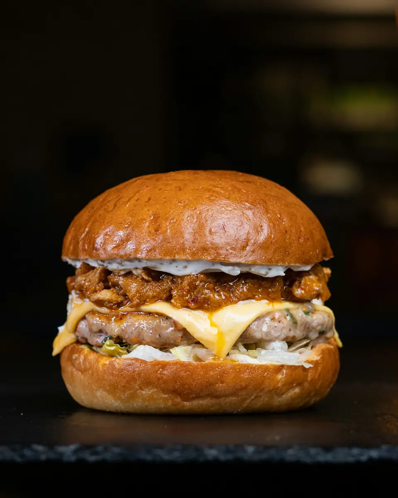
La Fusión
Dos cocinas en una casa.
En La Fusión se cruzan dos cartas en la misma mesa: la cocina de siempre y las hamburguesas.
De un lado, el cachopo con queso ahumado, el revuelto de morcilla, el pulpo y el chuletón. Del otro, la Catedrática y la Fusión, las hamburguesas que más se nombran en las reseñas.
Se come dentro, en el jardín cubierto o en la terraza, en la avenida de Navalperal. Y para acabar, la tarta de queso de Lotus.
Tiene un 4,6 en Google, con 199 reseñas (octubre de 2026).
La carta.
Lo que más nombra quien ya ha venido. La carta completa y los precios, en el local o por teléfono.
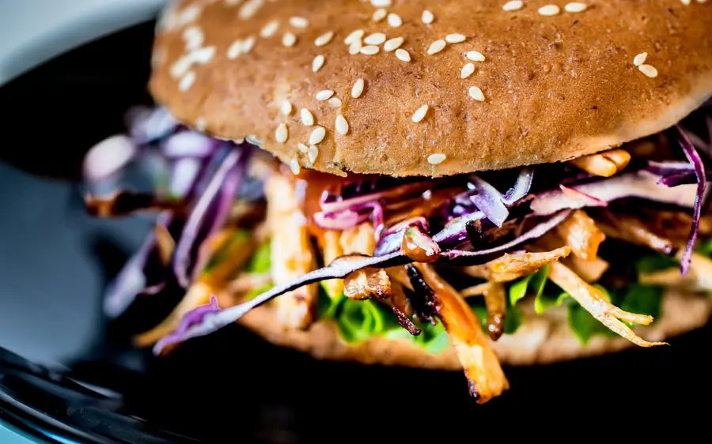
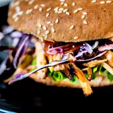
Entre panes- Hamburguesa Catedrática
- Hamburguesa Fusión
- Hamburguesa completa
- Hamburguesa americana
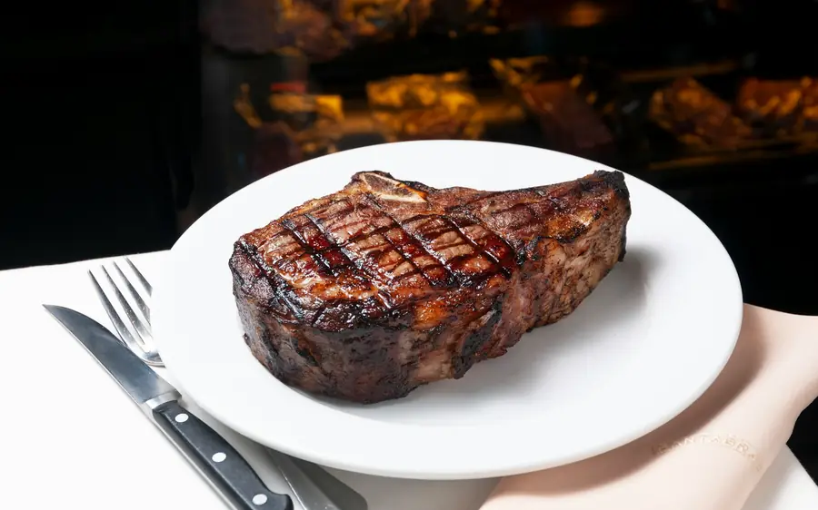
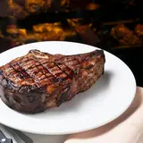
De la cocina de siempre- Cachopo con queso ahumado
- Revuelto de morcilla
- Pulpo
- Carnes y chuletón
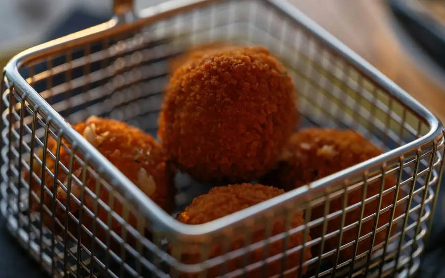
Para picar
- Tequeños
- Bravas
- Croquetas
- Empanadas
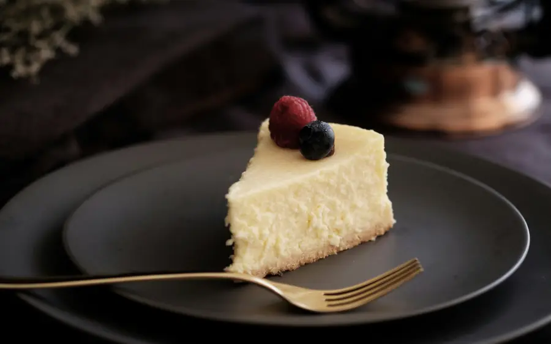
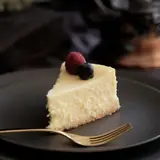
Postres- Tarta de queso de Lotus la más elogiada
- Tiramisú
Las fotos son de muestra: no son platos de La Fusión. Si tienes alguna alergia o intolerancia, pregunta por los ingredientes antes de pedir.
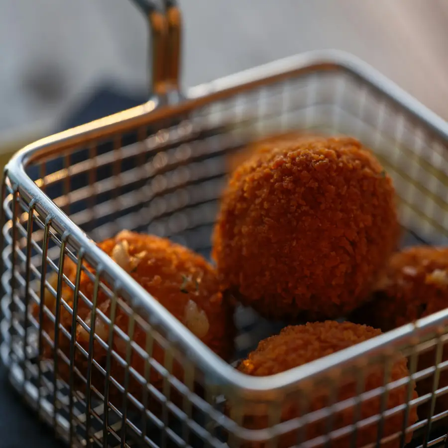
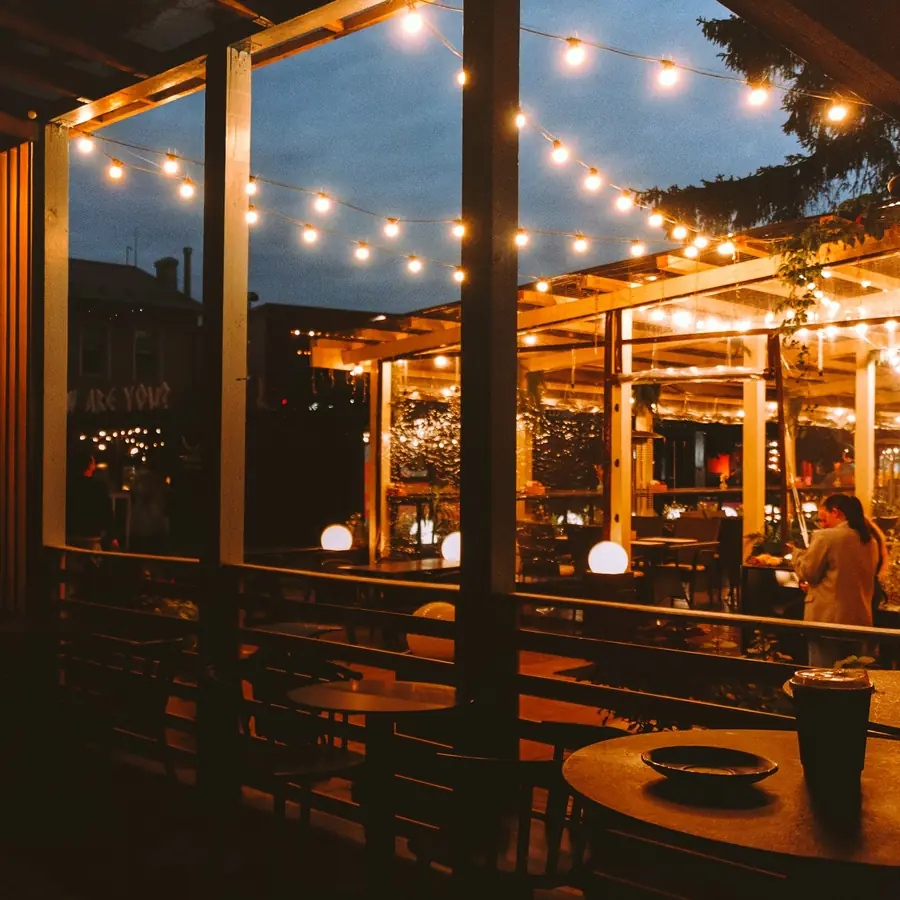
¿Qué día vienes?
Solo a mediodía.
Miércoles y jueves, de 12:00 a 16:30. Se viene a comer: por la noche está cerrado.
Comida y cena, sin cerrar.
El viernes, de 12:00 a 23:00 del tirón, sin cerrar a media tarde.
Todo el día, hasta tarde.
Sábados y domingos, de 12:00 a 23:30. Con el jardín cubierto y la terraza.
Lunes y martes, cerrado. Hoy: consulta los días de arriba. En festivos, mejor llamar antes.
Dónde estamos
- Av. Navalperal, 33
- 05230 Las Navas del Marqués
- De miércoles a domingo
- desde las 12:00
- 682 02 63 04
- Escríbenos
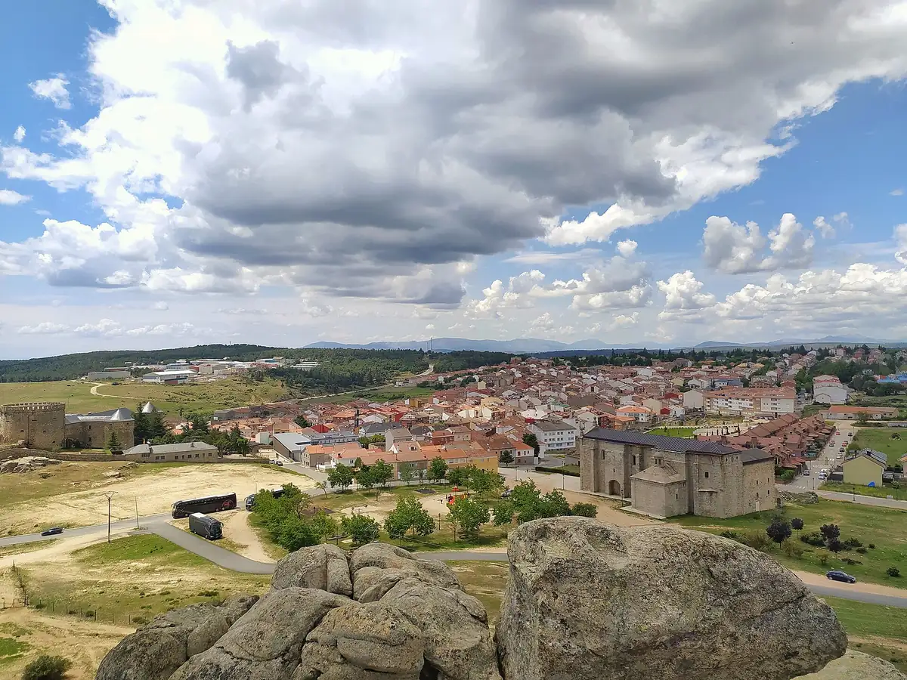